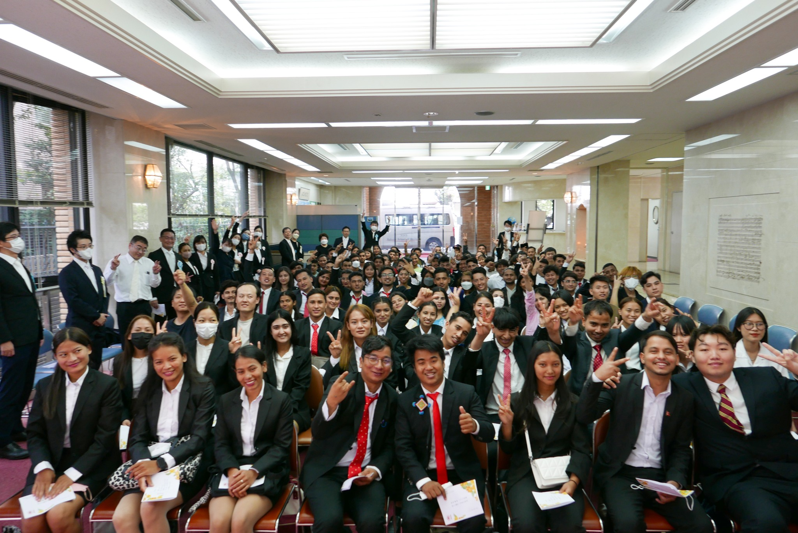

Ideal School Fair 2024 — Opening New Doors to the Future
We are excited to announce the Ideal School Fair 2024, happening on June 15, 2024 at Tokyo Big Sight, Hall C. This is a unique opportunity to explore the best educational programs, connect with schools, and discover your future path.
The event will feature hands-on learning experiences with AI-powered education systems, workshops on creativity and leadership, and talks from leading professionals in the field of education.
Networking sessions will give you the chance to meet students and industry professionals who share your ambitions. Don't miss out — register now and take your first step toward the future.
Date: June 15, 2024 | Location: Tokyo Big Sight, Hall C